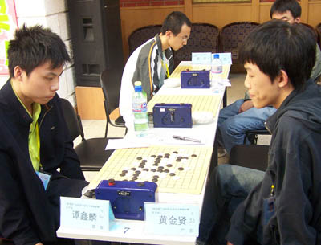
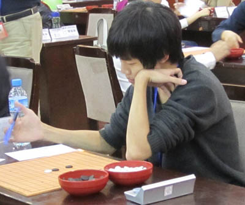
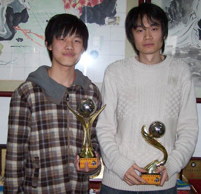
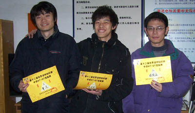
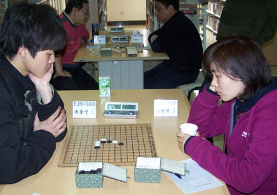

香港五子棋第一人黄金贤
#1 香港五子棋第一人黄金贤 作者：蓝天蓝 发表时间：2011-4-23 17:46:45
香港五子棋第一人黄金贤
炫飞☆天才混混（黄金贤）五段
2007年首届全国五子棋锦标赛第13名
2007广东联赛第三站黄金贤冠军
2009广东春季赛冠军
2009年7月第六届浙江五子棋公开赛第四名
2009年10月“妙手杯”第三届全国五子棋锦标赛第五名
2009年12月“京良杯”连换规则试验挑战赛第三名
2010年5月“妙手杯”2010年全国五子棋团体锦标赛第五名二台
2010北京第二届天王赛第二名地王
2010年全国五子棋锦标赛第19名
2011年第12届世界连珠锦标赛AT+QT中国选拔赛第一名。

第一次出现在全国赛场


第二届北京天王赛右为天王曹冬


12届世锦赛选拔赛对阵四川汪清清
黄金贤现在京就读人民大学，同在京就读著名高校清华大学李一，他俩可算是英雄相惜的对手。李一说黄：对棋的态度很纯粹，值得很多人学习。技术上来说，计算力比较强，风格也算是刚柔并济，有主动练棋的意识。但定式积累有待提高，偶尔会有不严谨、急躁的情况出现。
第十届世锦赛无禁组冠军、人民大学读研的校友仇云飞说黄：活泼开朗超级自信。
首届全国智力运会五子棋男子冠军贺启发说徒弟：黄金贤是个很聪明的小鬼，对棋认真执着，领悟得很好，能及时的发现自己的不足，能通过多种方式去解决不足的地方。每次我给他讲棋的时候他都能很好的融汇贯通，能够实践到实战中去，整体上来说已经达到了国内中上的实力了，再大胆一点的说已经跻身顶尖棋手了，对于他这次能够参加世界锦标赛。我真的是很高兴，为他感到骄傲，希望他能抱着去学习的态度，认真的比好自己的每一盘棋，积累更多的大赛经验为目的，当然有机会还是要冲冠军的，徒弟加油哦，为师会关注你的比赛的哦，不要有压力。
1.中国连珠网记者（以下简称记）：你是香港籍就我的不完全了解你应是五子棋中国香港第一人吧？
黄金贤（以下简称黄）：是的。
2.记：你是何时到大陆读书的？
黄：这个啊，幼儿园以来就一直在广州了。大概2,3岁到广州吧
3.记：你是何时对五子棋感兴趣的？
黄：我记得自己是小学五年级开始下的五子棋，好像是2003年左右，算一下我都下了九年了。当时第一次接触五子棋，规则是连成五个就能赢，觉得很简单，就开始玩啦。由于常常赢，就喜欢上它了。初二的时候才知道有禁手这个东西，规则弄懂了之后，慢慢地知道有开局，有必胜，有谱。于是开始自己买书看啦，当时就拿着本花蒲月在学，什么都不懂，可我兴趣太浓，硬是给背下来了。那时一直都在网上下，一直到高二，才第一次出来全国比赛。在认识了众多高手之后，棋力有了突飞猛进的增长。
4.记：你是07年第一次参加全国赛吧，以前参加过其他比赛吗？
黄：是的，07年第一次参加全国赛。07年有太多的回忆，还记得那时候姚老师带着一堆小孩来比赛。比赛有一轮结束后姚老师还让我记谱呢。不知道您还记不记得，我还光荣啊！！可是后来在看到你也找很多其他棋手记谱的时候心里有种莫名的失落感。07年之前就参加过几次广东的比赛，名次都不记得了。
5.记：你是何时加入炫飞社团的？能介绍一下炫飞社团吗？
黄：加入炫飞呀，08年吧，认识了我师傅贺启发之后加入这个社团的。炫飞是一个很有组织的社团，社员人数也很多。他们常常组织网络比赛，还有网络语音教学。每个活动都很有计划很细致，社员都比较满意。由于家族常常有活动，大家也喜欢在群里说话，所以社员的凝聚力很高。
6.记：你认为自己属于什么类型的棋手？
黄：这个问题有点难回答。棋该防则防，该攻则攻，这个视局面而定，具体问题具体分析。不过我自我感觉还是进攻型的。我对各种必胜棋型很熟悉，因为下棋早期我背了大量黑优局的定式，所以我的基础比较扎实。现在中局上的技巧基本上都是师傅贺启发教的，只要能把握住先手，我都会积极的进攻。
7.记：你如何看待定式的终结？
黄：定式终结有好有坏。对于初学者来说，定式多了更加容易学习，棋力更容易提高。对下棋老手来说，缺点就比较明显了，那会使比赛可以下的变化越来越少。
8.记：你对规则改革有什么看法？
黄：现在计算机那么发
#2 Re:香港五子棋第一人黄金贤 作者：被感动的人 发表时间：2011-4-23 20:06:39
谢谢蓝天转帖#3 Re:香港五子棋第一人黄金贤 作者：庞德 发表时间：2011-4-23 21:36:22
小混还是挺猛的。。